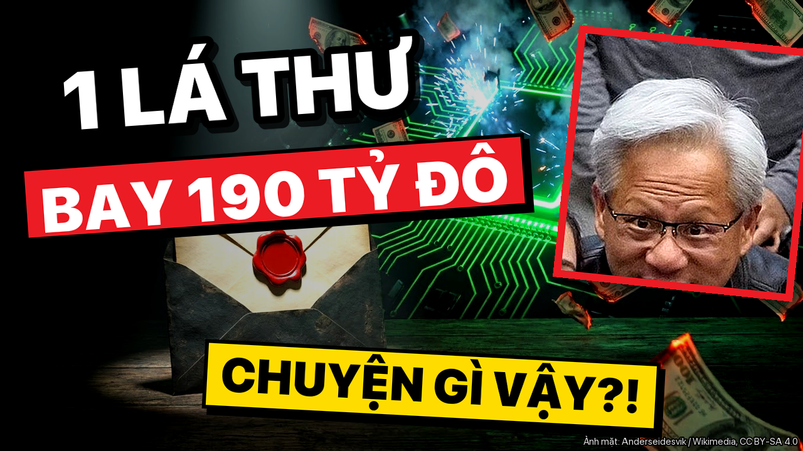

Duyệt 2 · 2026-11-11-nvidia-ceo-gian-diep
4 cảnh báo
- Nguồn [#n18] là số sơ bộ (Hai phiên 09–10/11/2026 trên đà xóa hơn 470 tỷ USD vốn hóa (ước tính khi phiên 10/11 chưa đóng)): video phải nói rõ 'sơ bộ'
- Nguồn [#n24] là số sơ bộ (Hồ sơ Malaysia (một báo cáo dẫn lại, chưa kiểm chứng độc lập): công ty liên quan Megaspeed mua ít nhất 4,8 tỷ USD thiết bị dùng công nghệ Nvidia, 6/2024–2/2026): video phải nói rõ 'sơ bộ'
- Nguồn [#n31] là số sơ bộ (Doanh thu công nghiệp công nghệ số Việt Nam 10 tháng đầu 2026 ước đạt 254,6 tỷ USD): video phải nói rõ 'sơ bộ'
- Cảnh báo: 14 hiệu ứng âm thanh/phút, chuẩn ≥ 15
Video
Tiêu đề + thumbnail
Phương án 1

Một lá thư làm Nvidia mất 190 tỷ USD: chuyện gì thật?
Phương án 2
CEO Nvidia bị dọa ra trát: gián điệp hay tin đồn?
Phương án 3
Nvidia mất 190 tỷ USD sau một lá thư: có ảnh hưởng Việt Nam?
Shorts
Mô tả
Một lá thư của CEO Nvidia, một phiên mất khoảng 190 tỷ USD vốn hóa, và những cáo buộc chưa được chứng minh. Video tách rõ điều đã xác nhận bằng văn bản chính thức, điều mới chỉ là cáo buộc, và hai mốc cần ngóng (17/11, 18/11), kèm góc nhìn cho người Việt. ⏱ Mốc chương 00:00 Một lá thư và 190 tỷ USD 00:45 Điều gì đã được xác nhận 01:41 Điều gì mới chỉ là cáo buộc 03:05 Thị trường và vụ kiện 03:58 Người Việt đứng ở đâu 04:46 Hai mốc cần ngóng 05:20 Tóm lại 📌 Cần biết - Kết luận tình báo theo New York Times và quan hệ tình cảm theo Financial Times là cáo buộc báo chí; Trung Quốc bác bỏ, Megaspeed phủ nhận, cáo buộc gián điệp chưa được chứng minh. - Bà Alice Huang không có quan hệ họ hàng với ông Jensen Huang. - Hơn 470 tỷ USD là ước tính sơ bộ của Decrypt khi phiên 10/11 chưa đóng. Mức giảm khoảng 9,5% sau hai phiên và "mười ngày" là phép tự tính của kênh. - 15% và 85% là ước chừng của một nhà phân tích, không phải kết luận của ai. Đơn kiện cổ đông mới là đơn khởi kiện, chưa có phán quyết. - Chưa có nguồn nào nói vụ này đụng trực tiếp tới Việt Nam. - New York Times, Financial Times chặn truy cập tự động nên các điều này được dẫn qua CNBC, Bloomberg, Fortune. Dữ liệu tới 11/11/2026. 📎 Nguồn (truy cập 11/11/2026) - Nvidia: https://nvidianews.nvidia.com/news/a-message-to-our-company - Nvidia: https://nvidianews.nvidia.com/news/statement-from-nvidia-board-of-directors - Nvidia: https://nvidianews.nvidia.com/news/statement-from-the-independent-members-of-the-nvidia-board - CNBC: https://www.cnbc.com/2026/11/10/nvidia-nvda-jensen-huang-affair-chinese-spy.html - CNBC (dẫn Financial Times): https://www.cnbc.com/2026/11/10/nvidia-jensen-huang-affair-office.html - Law Commentary: https://www.lawcommentary.com/articles/nvidia-jensen-huang-sued-chinese-spy-affair - Decrypt: https://decrypt.co/382974/nvidia-erases-2026-gains-republicans-threaten-ceo-subpoena - Fortune: https://fortune.com/2026/11/09/nvidia-board-probe-jensen-huang-affair-suspected-china-spy-statements/ - Bloomberg: https://uk.finance.yahoo.com/news/alice-huang-suspected-china-spy-101526066.html - Yahoo: https://www.yahoo.com/news/us/articles/alice-huang-allegedly-used-nvidia-192019783.html - Cổng Thông tin Chính phủ: https://en.baochinhphu.vn/significant-step-forward-to-turn-viet-nam-into-regional-tech-hub-the-diplomat-111241210091139064.htm - Các phép tính do kênh tự tính từ số liệu trên. 🖼 Ghi công ảnh - Ảnh: Coolcaesar / Wikimedia Commons (CC BY-SA 4.0) - Ảnh: Will Buckner / Wikimedia Commons (CC BY 2.0) - Ảnh: Anderseidesvik / Wikimedia Commons (CC BY-SA 4.0) - Ảnh: Noclip / Wikimedia Commons (Public domain) - Ảnh: NKSTTSSHNVN / Wikimedia Commons (CC BY-SA 4.0) - Ảnh: 极客湾Geekerwan / Wikimedia Commons (CC BY 3.0) - Ảnh: Arild Vågen / Wikimedia Commons (CC BY-SA 4.0) - Ảnh: Carlos Delgado / Wikimedia Commons (CC BY-SA 3.0) - Ảnh: VQTCS / Wikimedia Commons (CC BY 4.0)
Tags
Nvidia, Jensen Huang, CEO Nvidia, Megaspeed, Alice Huang, cổ phiếu Nvidia, vốn hóa Nvidia, kiểm soát xuất khẩu chip, chip AI Trung Quốc, Nvidia Việt Nam, tin công nghệ, Nhịp Công Nghệ